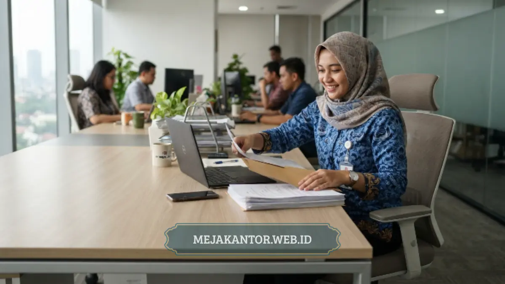

Harga meja kantor modern ditentukan oleh material, ukuran dimensi, tingkat kerumitan desain, jenis finishing, dan volume pemesanan proyek. Kelima faktor ini menyebabkan harga meja kantor dapat bervariasi cukup signifikan di pasaran.
Memahami faktor-faktor penentu tersebut akan membantu manajemen dan tim procurement menyusun anggaran pengadaan secara realistis dan efisien. Perencanaan matang mampu mencegah pengeluaran tak terduga dalam renovasi ruang kerja.
- Material menjadi faktor paling dominan yang memengaruhi harga meja kantor modern.
- Ukuran dan tingkat kerumitan desain turut menentukan biaya produksi.
- Jenis finishing memengaruhi tampilan sekaligus daya tahan meja dalam jangka panjang.
- Volume pemesanan dalam jumlah besar umumnya memberikan efisiensi harga per unit.
- Konsultasi kebutuhan spesifik membantu perusahaan mendapatkan harga yang sesuai anggaran.
Menentukan anggaran furnitur sering kali menjadi tantangan tersendiri bagi bagian pengadaan perusahaan saat melihat variasi penawaran vendor. Perbedaan harga yang mencolok kerap memicu keraguan dalam menentukan pilihan terbaik.
Variasi biaya tersebut berakar pada aspek teknis material serta skala komersial proses perakitan furnitur. Artikel ini mengupas tuntas faktor-faktor utama tersebut agar Anda dapat membuat keputusan investasi yang tepat sasaran.
Daftar Isi Artikel
- Bagaimana Material Memengaruhi Harga Meja Kantor Modern?
- Mengapa Ukuran dan Desain Meja Memengaruhi Total Biaya?
- Apa Pengaruh Jenis Finishing terhadap Harga Meja Kantor?
- Bagaimana Volume Pemesanan Memengaruhi Efisiensi Harga?
- Bagaimana Cara Mendapatkan Meja Kantor Berkualitas dengan Anggaran Efisien?
- Kesimpulan dan Panduan Konsultasi Furnitur
Bagaimana Material Memengaruhi Harga Meja Kantor Modern?
Material merupakan faktor paling mendasar yang menentukan harga jual meja kantor modern karena setiap jenis bahan memiliki biaya bahan baku dan durabilitas berbeda. Kayu solid alami selalu berada di kategori harga tertinggi karena proses pengolahan panjang.
Di sisi lain, bahan engineered wood seperti particle board atau MDF berlapis HPL menjadi pilihan populer yang lebih bersahabat dengan anggaran operasional. Bahan ini sangat ideal untuk pengadaan workstation staf skala masif.
Kombinasi rangka kaki besi holo dengan daun meja kayu berada pada kisaran harga menengah yang sangat diminati. Struktur ini menawarkan ketahanan fisik optimal sekaligus menghadirkan gaya industrial yang modern dan kokoh.

Mengapa Ukuran dan Desain Meja Memengaruhi Total Biaya?
Ukuran meja yang lebih lebar tentu menyerap volume material mentah lebih banyak serta menuntut waktu perakitan lebih panjang. Hal ini secara langsung mengerek biaya produksi dan tarif pengiriman barang ke alamat klien.
Desain rumit seperti konfigurasi meja L-shape, penambahan laci gantung berkunci, atau panel partisi pembatas juga membutuhkan proses pemotongan ekstra. Detail kustomisasi selalu berbanding lurus dengan alokasi jam kerja teknisi pabrik.
Selain itu, meja berfitur mekanis seperti standing desk elektrik membutuhkan modul motor penggerak dan controller canggih. Keberadaan komponen kelistrikan bersertifikasi inilah yang membuat harganya lebih tinggi dibanding meja statis.
Apa Pengaruh Jenis Finishing terhadap Harga Meja Kantor?
Jenis finishing seperti lapisan veneer kayu alami, cat semprot duco, dan laminasi HPL memiliki dampak signifikan terhadap nilai jual produk. Finishing veneer kayu asli tergolong mahal karena menggunakan lapisan kayu pilihan dengan teknik pengeleman presisi.
Sementara itu, finishing laminasi HPL menjadi solusi ekonomis favorit yang tahan gores, tahan panas cangkir kopi, dan kedap percikan air harian. Ragam motif serat kayu pada HPL mampu memberikan nuansa mewah tanpa biaya tinggi.
Pemilihan jenis finishing sebaiknya diselaraskan dengan fungsi ruangan kerja serta alokasi dana yang tersedia. Dengan begitu, kantor tetap tampil elegan tanpa membebani keuangan operasional perusahaan secara berlebihan.
Bagaimana Volume Pemesanan Memengaruhi Efisiensi Harga?
Volume pemesanan dalam jumlah besar membuka ruang terciptanya efisiensi skala produksi pada workshop furnitur. Pemotongan bahan dalam jumlah banyak meminimalkan sisa material terbuang sehingga biaya per unit bisa ditekan.
Perusahaan yang melakukan pengadaan furnitur untuk satu lantai gedung baru umumnya mendapatkan potongan harga khusus dari vendor. Efisiensi ini menjadikan strategi pengadaan terpusat sangat menguntungkan bagi korporasi.
Selain potongan harga unit, pemesanan partai besar juga menghemat biaya transportasi ekspedisi dan ongkos pasang instalasi di lapangan. Biaya logistik terbagi merata ke seluruh unit meja yang dipasang.
Bagaimana Cara Mendapatkan Meja Kantor Berkualitas dengan Anggaran Efisien?
Kunci pengadaan meja kantor hemat anggaran adalah menentukan skala prioritas fungsional sebelum memilih aksesoris tambahan. Prioritaskan fitur kenyamanan duduk dan kekuatan rangka utama dibanding ornamen dekoratif yang tidak fungsional.
Langkah selanjutnya adalah berkonsultasi langsung dengan vendor manufaktur furnitur kantor terpercaya sejak tahap perencanaan denah. Tim ahli dapat memberikan saran perpaduan material yang tahan lama sesuai batas anggaran yang dimiliki.
Tim Mejakantor.web.id siap mendampingi proses perencanaan tata letak dan pemilihan spek meja kantor yang paling efisien. Anda dapat memperoleh produk furnitur berkualitas pabrik dengan garansi mutu dan harga yang kompetitif.
Kesimpulan dan Panduan Konsultasi Furnitur
Harga meja kantor modern dipengaruhi oleh sinergi antara material, dimensi, tingkat kerumitan desain, finishing, dan kuantitas unit. Mengetahui aspek-aspek tersebut memberi kendali penuh bagi perusahaan dalam mengelola anggaran pengadaan secara tepat sasaran.
Jangan biarkan ketidakpastian harga menghambat peningkatan fasilitas kerja tim kantor Anda. Diskusikan kebutuhan meja kantor modern bersama tim Mejakantor.web.id sekarang juga untuk memperoleh simulasi harga terbaik.

Mega Anggun
Penulis Konten & Spesialis Penataan Interior Kantor. Berpengalaman dalam memberikan tips ergonomi, analisis estimasi anggaran, dan memilih furnitur terbaik untuk pengadaan B2B.